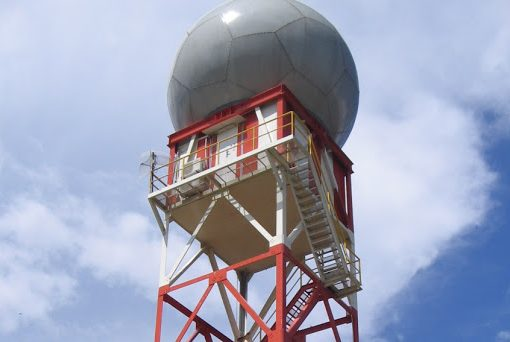

Pengertian Meteorologi
Ilmu atmosfer: proses fisika, kimia, dan dinamika yang membentuk cuaca.
Pengertian Meteorologi
Meteorologi adalah cabang ilmu yang mempelajari atmosfer—lapisan gas yang menyelimuti Bumi—beserta proses fisika, kimia, dan dinamika di dalamnya. Singkatnya, meteorologi adalah ilmu tentang cuaca dan berbagai fenomena atmosfer seperti angin, awan, hujan, badai, suhu udara, dan tekanan yang berubah setiap hari.
Meteorologi membantu menjelaskan kenapa hujan turun, kenapa angin kencang, kenapa terbentuk kabut, hingga kenapa pesawat harus menghindari awan Cumulonimbus. Observasi lapangan, radar, satelit, dan pemodelan numerik menjadi fondasi utama untuk memprediksi kondisi atmosfer.
Ruang Lingkup Meteorologi
- Presipitasi: hujan, gerimis, badai, hujan es, salju; proses koalesensi hingga dampak banjir/siklus air.
- Suhu Udara: pengaruh radiasi, awan, musim, permukaan; penting untuk konveksi, kabut, stabilitas.
- Angin: dipengaruhi gradien tekanan, Coriolis, topografi; dari angin lokal hingga monsun/jetstream.
- Awan: proses kondensasi, klasifikasi (cumulus, stratus, cirrus), kaitannya dengan hujan/badai.
- Visibilitas: dipengaruhi kabut, asap, embun; kritikal untuk penerbangan/pelayaran.
- Tekanan Udara: indikator sistem cuaca, memengaruhi angin.
- Cuaca Ekstrem: badai tropis, hujan lebat, angin kencang, petir, gelombang panas.
- Interaksi Atmosfer–Laut: ENSO, La Niña, MJO, siklon tropis, pola hujan jangka panjang.
Cabang-Cabang Meteorologi
- Meteorologi Dinamik: gaya/gaya Coriolis, gradien tekanan, gelombang atmosfer, dasar NWP.
- Meteorologi Sinoptik: analisis peta cuaca, citra satelit/radar, front, pusat tekanan, pola angin.
- Meteorologi Fisika: mikrofisika awan, presipitasi, radiasi, aerosol.
- Meteorologi Satelit: observasi global awan/suhu laut/angin/kelembapan/badai.
- Klimatologi: pola 30 tahunan, ENSO/MJO/IOD, perubahan iklim.
- Meteorologi Penerbangan: turbulensi, icing, jetstream, visibilitas rendah, info METAR/TAF/SIGMET.
Teknologi dalam Meteorologi Modern
-
🛰️ Satelit Cuaca — pantau awan, SST, badai tropis; citra ~10 menit (mis. Himawari-9, GOES-16).

Sumber: Wikipedia (Weather satellite).
-
📡 Radar Cuaca — deteksi intensitas hujan & pergerakan badai, peringatan dini cuaca ekstrem.

Tower RADAR BMKG (megatower.co.id).
- 🌬️ LIDAR & SODAR — profil aerosol/angin & turbulensi atmosfer bawah.
- 🖥️ Numerical Weather Prediction (NWP) — model ECMWF/GFS/WRF menghitung evolusi atmosfer.
- 🌡️ Automatic Weather Station (AWS) — suhu, tekanan, angin, kelembapan, curah hujan realtime.
Manfaat Meteorologi
- Penerbangan: jalur aman, hindari Cb/turbulensi/icing.
- Pertanian: waktu tanam/panen, irigasi, mitigasi kekeringan.
- Mitigasi Bencana: peringatan hujan ekstrem, badai, banjir, gelombang tinggi.
- Pelayaran & Kelautan: tinggi gelombang, angin, arus, badai tropis.
- Kota & Lingkungan: kualitas udara, UHI, kabut asap, perencanaan ruang hijau.
- Energi: potensi angin/surya/hidro, risiko cuaca ekstrem untuk operasi.
Kesimpulan
Meteorologi menjelaskan cuaca harian hingga fenomena global. Kombinasi observasi, satelit/radar, AWS, dan model numerik menghasilkan prakiraan untuk keselamatan penerbangan, mitigasi bencana, pertanian, energi, dan perencanaan kota.
Perkembangan teknologi (satelit, radar, LIDAR/SODAR, AWS, NWP) membuat pemantauan lebih cepat dan akurat. Informasi ini menjadi fondasi keberlangsungan hidup, keamanan, dan aktivitas manusia.
Tanpa meteorologi, dunia bergerak tanpa arah karena cuaca adalah navigator kehidupan.
Mulai Kuis
Siap menguji pemahaman dasar meteorologi? Soal diacak setiap kali diulang.